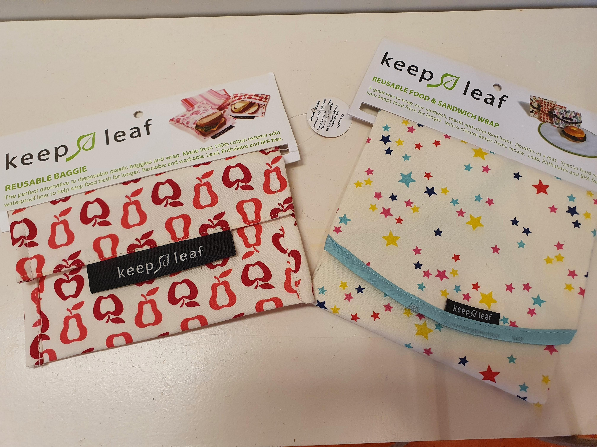
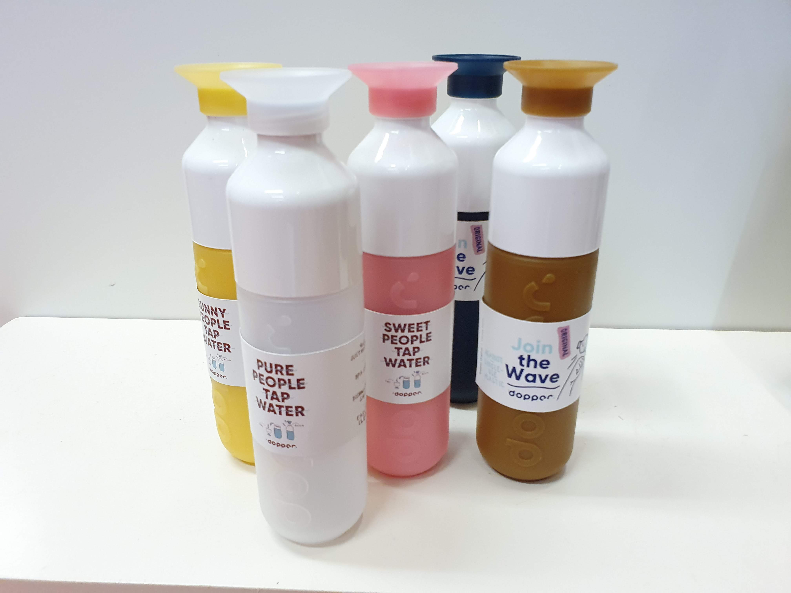
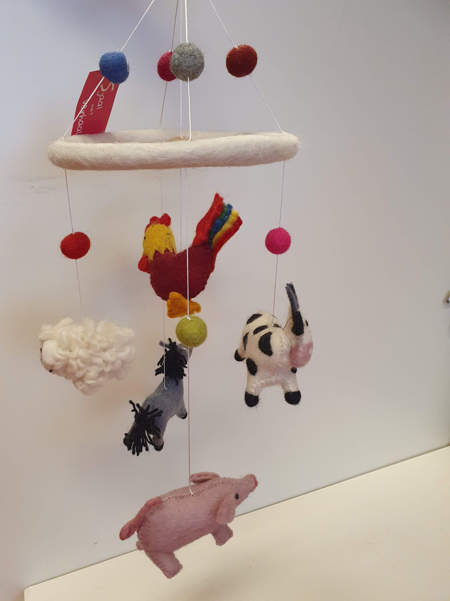
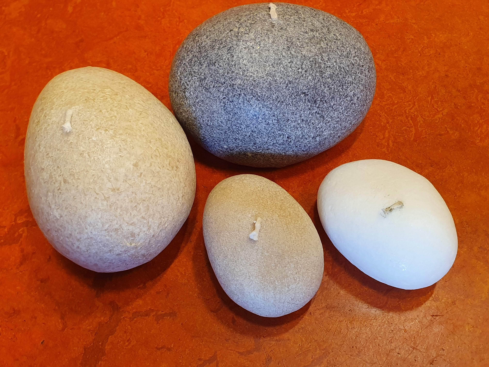
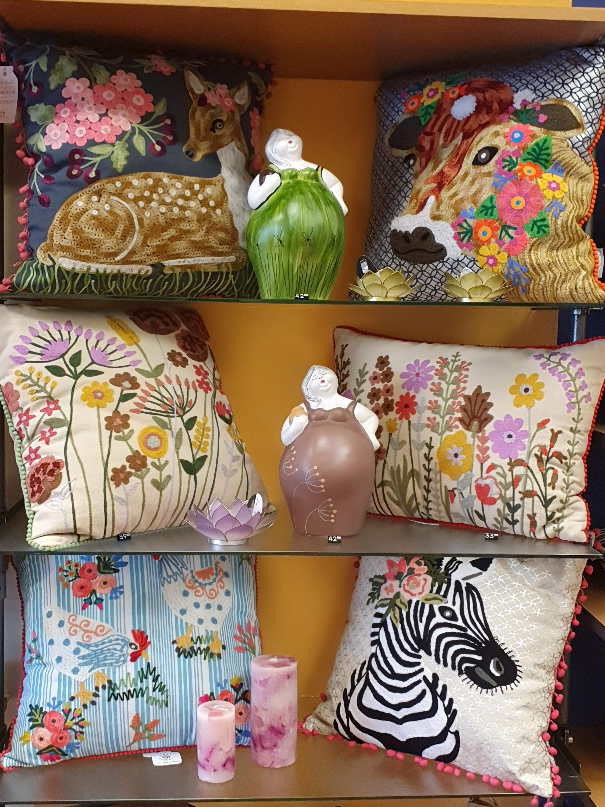

Interieur

- kaarsenhouder is gemaakt van ‘capiz’. Dit is een schelpensoort die vooral gevonden wordt aan de kust van de Filippijnen en Indonesië. De lotusbloem heeft vele symbolische betekenissen, zoals (zon)licht, reinheid en vrede.
Lotusbloem kaarsenhouders
- De fabriek van Keep Leaf ligt in India en is ETI (Ethical Trade Initiative) gecertificeerd wat garant staat voor verantwoordelijke producten en tevens een verantwoordelijke bedrijfsvoering, internationaal erkende testlaboratoria worden ingezet om kwaliteit en overeenstemming met internationale normen te waarborgen. Keep Leaf gelooft in een werkomgeving die rechtvaardige lonen, langdurige werkgelegenheid, onderwijs en opleiding voor werknemers steunt, om zo te helpen bouwen aan een betere toekomst. De collecties van Keep Leaf zijn ontworpen met het oog op het milieu, en de bevordering van het gebruik van duurzame, biologische producten en materialen. Keep Leaf steunt jaarlijks een goed doel of organisatie door een deel van de opbrengsten van elk verkocht product te doneren. [foto volgt nog]
Keep leaf (boterhamzak)


- Everaarts heeft besloten na een schokkende documentaire over hoe de hoeveelheid plastic het voor elkaar krijgt om onze oceanen binnen te dringen, die vervolgens veranderen in een gigantische vuilnisbelt lijkend op plastic soep. Hij heeft ook gemerkt hoeveel single-use plastic waterflessen elke dag worden weggegooid, hoewel in veel landen het beste drinkwater uit de kraan komt. Op 10 oktober 2010 heeft Dopper in Nederland Duuurzaamheidsdag in het leven geroepen. Vanaf toen is deze oceaan reddende waterfles.
Doppers
- Onderzetters groot en klein, sjaals, maar ook kleedjes voor de kinderkamer, worden vervaardigd door Nepalese vrouwen. De vilten onderzetters, soms bestaande uit vilten bolletjes, hebben de prachtigste kleuren. In Nepal is een geweldig project opgestart dat vrouwen helpt om een eigen inkomen te verdienen
Sjaal met Verhaal


- Kaars van gecertificeerde palmolie uit Indonesië, in de vorm van een steen. De kaars brandt lang en schoon.
Kiezelkaars
- Onderzetters groot en klein, sjaals, maar ook kleedjes voor de kinderkamer, worden vervaardigd door Nepalese vrouwen. De vilten onderzetters, soms bestaande uit vilten bolletjes, hebben de prachtigste kleuren. In Nepal is een geweldig project opgestart dat vrouwen helpt om een eigen inkomen te verdienen
Kussens
